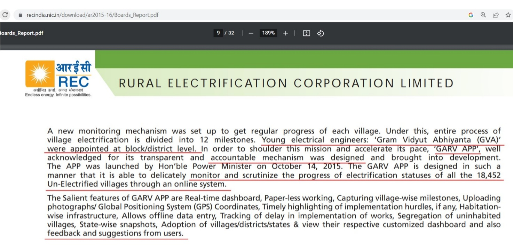
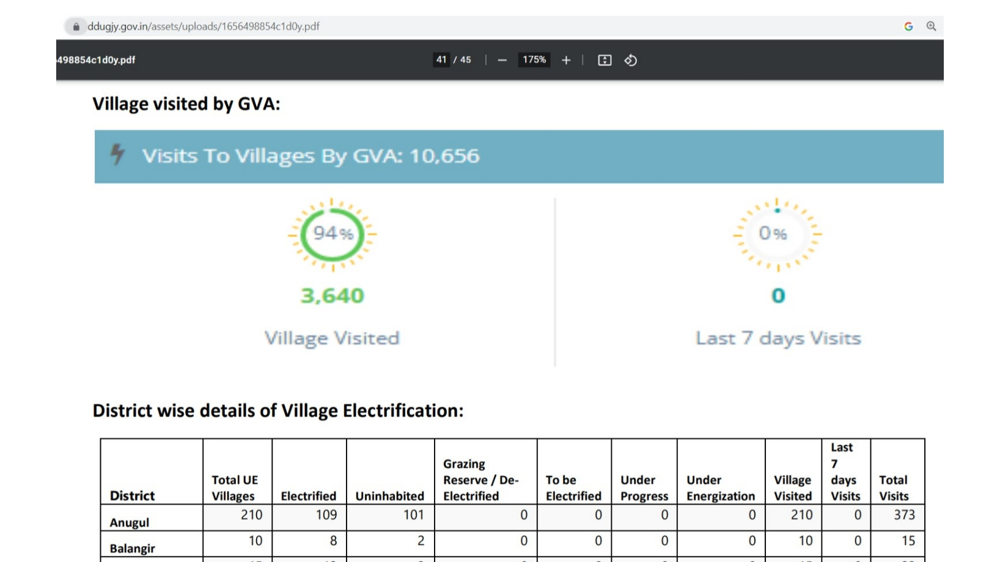
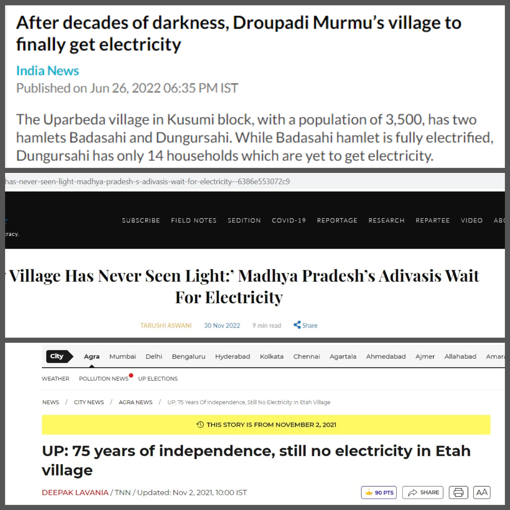

Subarnapur, a remote village in Ganjam district, Odisha, has finally been electrified after 25 years of darkness.
What began as a development update quickly became a political flashpoint, triggered primarily by the BJP, which now governs Odisha (since 2024), and is aggressively promoting the electrification as proof of its governance success.
BJP supporters argue:
- this achievement exposes "24 years of BJD failure", and
- the new BJP government deserves credit for finishing the job.
But the moment BJP opened this debate, a counter-question emerged:
If a village in Odisha still lacked electricity in 2025, how did Prime Minister Modi declare "every village electrified" back in 2018?
This report analyses the claim, the central verification system, and independent media reports to understand whether this is a state failure, a central failure, or a contradiction in BJP's own narrative.
1. The 2018 Announcement: "Every Single Village Has Electricity"
On 29 April 2018, Prime Minister Narendra Modi tweeted:
> "I am delighted that every single village of India now has access to electricity."
This formed the basis of the widely publicised "100% village electrification" claim.
Now that BJP itself is highlighting a 25-year unelectrified village, the contradiction becomes unavoidable:
How could every Indian village have electricity in 2018 if a Ganjam village was still dark in 2025?
2. Electrification Monitoring Was Controlled by the Centre
Under the Deen Dayal Upadhyaya Gram Jyoti Yojana (DDUGJY):
- Rural Electrification Corporation (REC), a Central PSU, was the nodal agency.
- REC supervised project appraisal, funding, monitoring, MIS development, and audits.
- Verification was conducted by central-appointed Gram Vidyut Abhiyantas (GVAs).
This means:
The Centre, not the Odisha government, was responsible for verifying whether a village was electrified.
The data used for Modi's 2018 announcement was centrally collected, centrally verified, and centrally approved.
3. GVAs and the GARV Dashboard: Central Verification System
To ensure accountability, REC deployed GVAs, engineers responsible for:
- visiting each village
- capturing GPS-tagged photos/videos
- verifying 12 electrification milestones
- uploading evidence to the GARV app, launched by the Union Power Ministry in 2015
The GARV dashboard was the official basis for the 2018 "100% electrified" claim.
GARV's workflow:
- DISCOM uploads status
- GVA visits the site
- GVA uploads geo-tagged proof
- REC validates
- Village marked "electrified"
Given this process, any unelectrified village in 2025 signals a failure of central verification, not just state inaction.
4. Odisha Data Recorded by the Centre (2022)
According to GARV:
- Odisha had 3,640 villages tracked
- GVAs made 10,656 verification visits
- Dashboard completion: 94%
These numbers fed directly into the 2018 "every village electrified" announcement.
If a Ganjam village remained unelectrified until now, that contradicts:
- The central verification system
- The 2018 central government claim
- BJP's renewed attempt to celebrate this electrification as its exclusive achievement
5. Independent Media Reports (2021–2022) Already Exposed Gaps
Years after the national declaration, multiple media outlets found unelectrified villages across India:
Uttar Pradesh (2021)
Times of India reported a village in Etah without electricity despite being listed as electrified.
Madhya Pradesh (2022)
Article 14 documented Adivasi hamlets with no functional supply.
Odisha (2022)
In Uparbeda, linked to President Droupadi Murmu, only a fraction of households had electricity.
These findings show the issue is systemic, not Odisha-specific, and points again to central verification lapses.
6. Why BJP's Current Position Contradicts Its Own Past Claim
In 2025, the BJP (now ruling Odisha) is aggressively promoting Ganjam's electrification.
But this raises two questions:
1. If BJP claims credit in 2025, does it also accept the 2018 claim was incomplete or incorrect?
2. If the village was unelectrified during BJD rule, why didn't the Centre's monitoring, led by a BJP government, detect or correct it?
By initiating this political attack, BJP inadvertently reopens scrutiny of:
- its own 2018 national announcement,
- its central verification system, and
- its role, when REC, GVAs, and the GARV app were under the Union government.
Brief Facts:
Did BJD fail to electrify the village earlier?
Yes, Odisha's local implementation lagged, and the village remained unelectrified for decades.
Did BJP fail at the Centre?
Yes, the central verification system (REC + GVA + GARV) failed to detect this before making a national claim.
Is BJP's 2025 celebration contradictory to Modi's 2018 claim?
Yes. Highlighting this new electrification directly exposes the flaw in the 2018 "100% electrified" announcement.
Who bears responsibility?
➡ BJD for delayed implementation
➡ BJP-led Centre for incorrect national verification
➡ And now BJP (Odisha) for using an example that undermines its own 2018 claim
End Note:
Ganjam's new electrification is a welcome development, but the political narrative built around it is selective.
By starting the debate and claiming credit, the BJP has unintentionally revived a larger national question:
If every Indian village was electrified in 2018, how are old villages still being electrified in 2025?
The answer lies in administrative lapses at both ends, but the central claim, widely publicised by the BJP, is now undeniably in question.